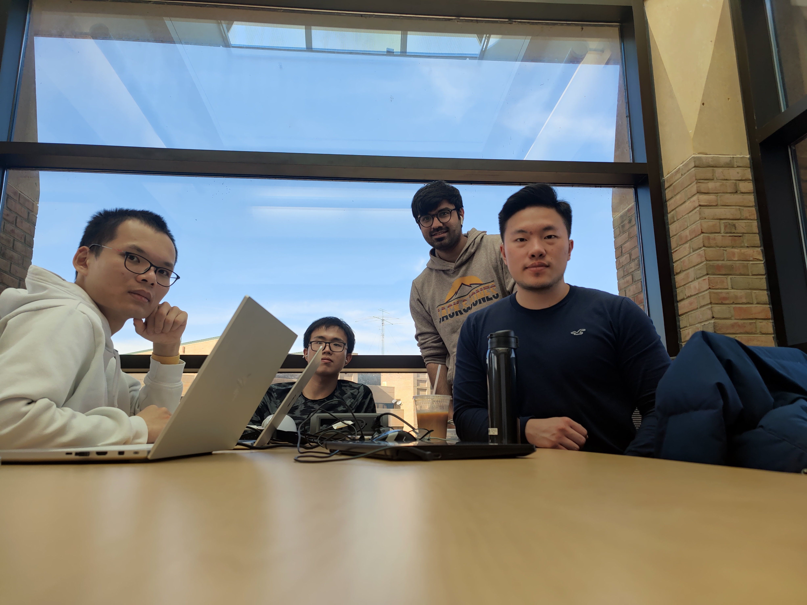
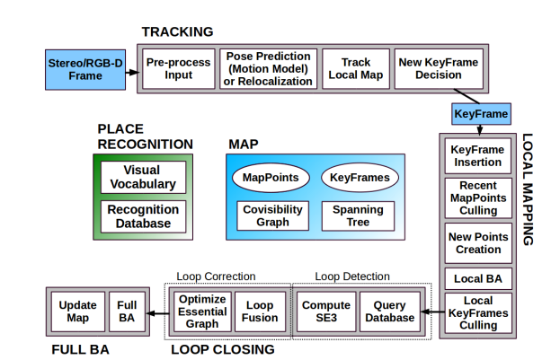
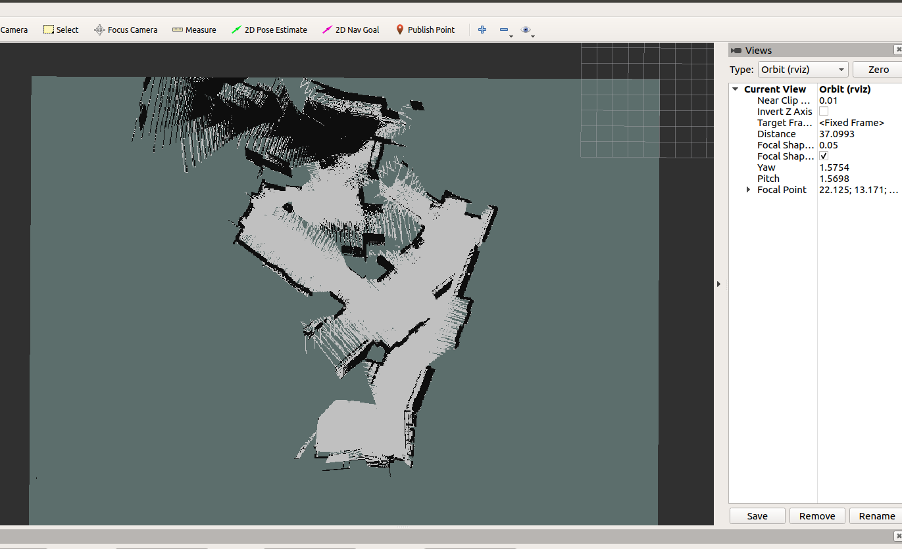
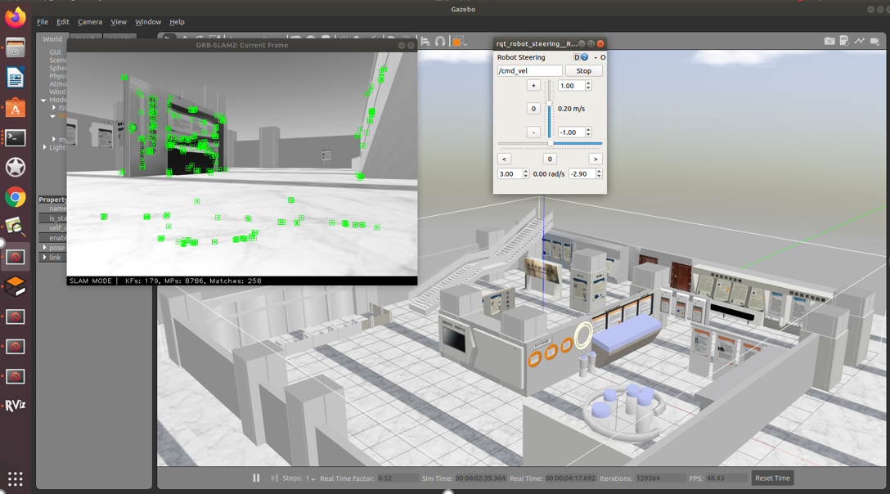
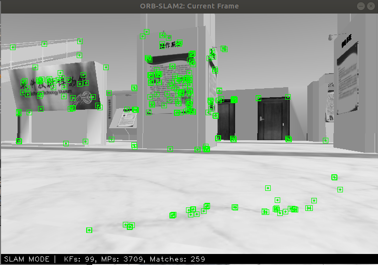

=Team in action + rui chen
Team
| Akshay Tondak | EECS, SIPML |
| Goro Yeh | Robotics |
| Rui Chen | Robotics |
| Hao Chen | EECS, Robotics and Math |
| Simeng Zhao | Robotics |
ORB-SLAM
ORB-SLAM is an open source implementation of pose landmark graph SLAM. It supports monocular, stereo, and RGBD camera input through the OpenCV library.
Our multi-agent system is an enhancement of the second generation of ORB-SLAM, ORB-SLAM2.
Diagram of the ORB-SLAM2 implementation from Mur-Artal and Tardos' 2017 paper, "ORB-SLAM2: an Open-Source SLAM System for Monocular, Stereo and RGB-D Cameras".
Multi-Agent ORB-SLAM
- Two robots exploring can cover the same space in half the time.
- If the two robots can identify each other, they can use recognition of the other robot as an additional opportunity for loop closure. We make use of Ed Olson's popular April tag system for robot identification.
However, a multi-agent system requires a mechanism for combining map data from the ORB-SLAM implementation running on each robot. While future implementations may utilize a client-server architecture to do this fusion, here we simply create a separate server thread with direct access to the client threads.
Datasets
We used a ROS simulation of a museum dataKITTI dataset taken in Karlsruhe, Germany. To simulate two simultaneously running clients, we split the grayscale 00 stereo portion of the KITTI dataset in half, adjusting the timestamps on the second half to align with the first half.

In phase two, we created a custom dataset with April tagged "robots" on the second floor of the EECS building at the University of Michigan.

Modifications to ORB-SLAM
To simulate running two clients, we ran two simultaneous instances of ORB-SLAM, each with an adjustable sized portion of the 00 stereo portion of the KITTI dataset. Each client instance of ORB-SLAM spawns three threads: tracking, mapping, and loop closing. We added a fourth thread to simulate a server merging data from the two client instances. This fourth server detected and performed loop closures on the combined data of the two clients, creating a larger combined map of the environment.
The complete code for our implementation of multi-agent ORB-SLAM can be found here on Github.
Results
Phase One: KITTI Dataset

This image shows a successful loop closure point, with the two viewings forming the loop closure coming from different data tracks ("clients").

This is a larger portion of the server thread generated map.
Phase Two: Custom Dataset


The image on the left shows an intersection from the KITTI dataset which, because the agents come from opposite directions, cannot be used as a loop closure point. In contrast, our April-tag enhanced system, due to agent recognition, can use this type of intersection as a loop closure point. The image on the right shows both within-client and between-client loop closures.


Blue lines indicate keyframes; green lines indicate loop closures within a client; red lines indicate loop closures from one client to the other.
See it in Action
Future Work
More robots
We hope that in the future, we will be able to implement collaborative SLAMs that include more robots, and even map construction based on robot swarms.
Joint pose graph estimation
Our current approach to merging is overlapping maps based on the estimated initial relative location while the internal pose graphs are independent between robots, which leads to uncontrollable errors at map junctions. In the future, we hope to modify the pipeline of ORB\_SLAM so that robots can identify, register, and synchronize common feature points among robots, and then use these feature points as edges to connect independent graphs between robots for loop closure detection and further online optimization.
Better Dataset
The current data set of our project comes from the simulation environment, which is different from the data in the real world. At the same time, there are currently few datasets suitable for multi-robot SLAM, so in the future, we hope to use multi-robot field collection data to build a dataset, and continue to develop our project on this dataset.
Better Data storage
In addition, Finally, we want to optimize the data storage method. At present, we also save some log information when producing maps, which makes the amount of data we store grow rapidly and makes it difficult for us to generate large-scale maps. Therefore, we want to optimize map information in the future. storage method to increase the scale of our stored data.